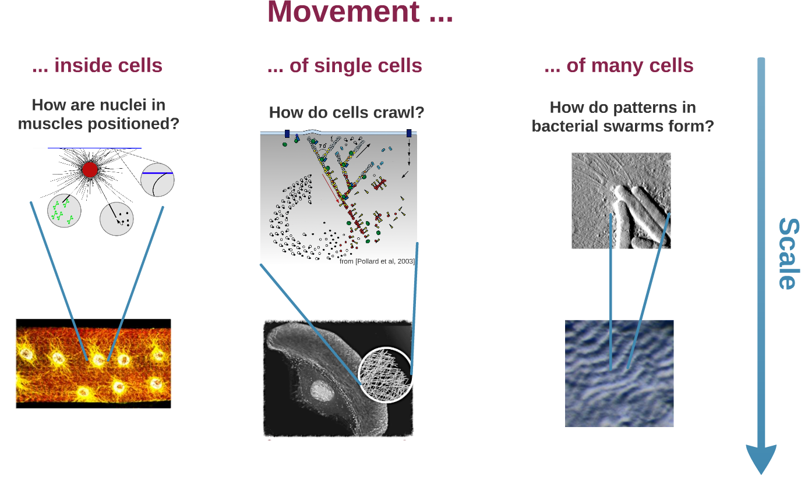

Movement and scales
My research focuses on two
center themes:
1. Movement in and of
cells: How are forces created that allow
cells to move, how are cell organelles positioned and how can
we understand collective motion of cells?
2. Scales: How do nano
or micro-scale events have an effect on a much bigger scale?
How can we bridge these scales mathematically?
Biologically
I am interested in
- Cell migration, e.g. keratocyte movement
- Muscle development, in
particular with regards to myonuclear movement and
size control
- The cytoskeleton, particularly actin networks and
the interplay with accessory molecules like myosin
or cofilin
- Collective motion and pattern formation in e.g. myxobacteria or sperm
- Non-linear PDEs and ODEs (traveling waves, bifurcations, long-term behavior and asymptotic analysis)
- The Micro-Macro passage from particle-based to
macroscopic models
- Boltzmann type equations, kinetic transport equations
- Numerical simulations
- Sperm-Mucus Interactions - The aim of this project is to characterize sperm movement through a fluid containing a fibrous environment. We derive, analyze and simulate differential equations for the sperm, the fluid and the fibers. Collaboration with the groups of P. Degond and E. Keaveny (Imperial College).
- Actin-Cofilin Interactions - Role of ADF/Cofilin in establishing and maintaining an actin network of fixed length. Collaboration with A. Mogilner (New York) and L. Blanchoin (Grenoble).
- Counter-propagating Traveling Waves - This analytical
project examines the unusual structure of having two different
traveling wave frames in systems of coupled nonlinear PDEs.
- Myonuclear Positioning - How are nuclei positioned in developing muscle cells, how is their size controlled, the Myonuclear Domain Hypothesis. Collaboration with the groups of A. Mogilner (New York) and M. Baylies (New York).
- Myxobacteria - Onset of patterns, kinetic models, collective behaviour, non-linear PDEs, wave formation. Collaboration with groups of P. Degond (London) and C. Schmeiser (Vienna).
- Lamellipodia - Actin
driven cell movement, variational methods, non-linear PDEs.
Collaboration with D.
Oelz, N.
Sfakianakis and C.
Schmeiser.